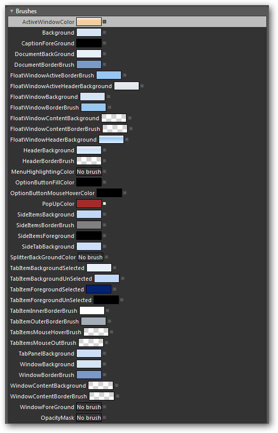
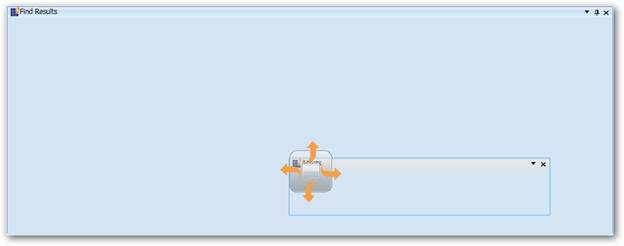
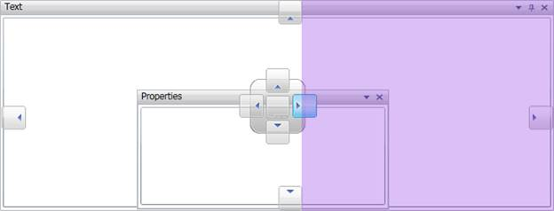
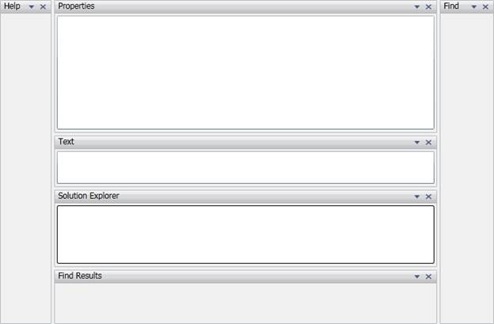
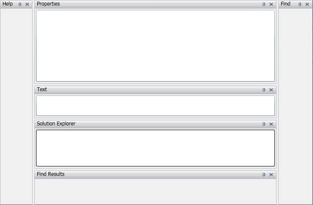
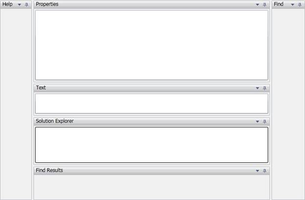
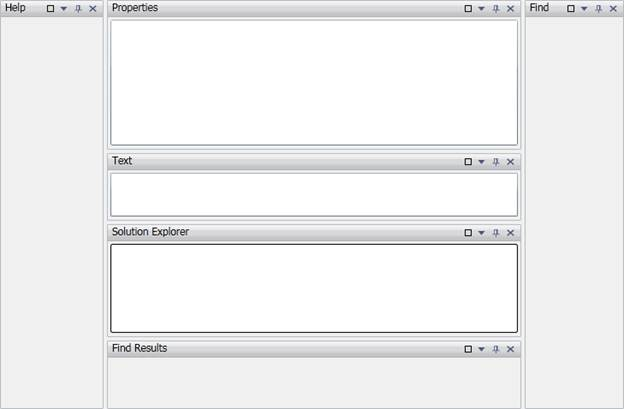
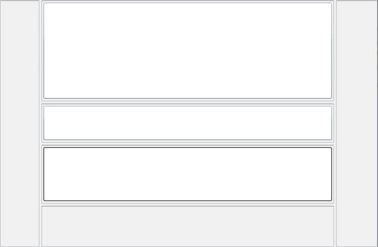
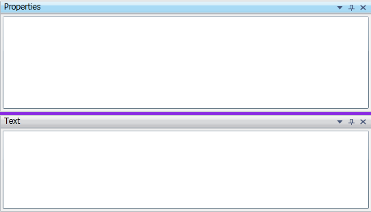

Docking Window appearance can be customized using the following properties,
· Window Background
· WindowBorderBrush
· WindowBorderThickness
· WindowContentBackground
· WindowContentBorderBrush
· WindowContentBorderThickness
· WindowContentConrnerRadius
· WindowContentMargin
· WindowCornerRadius
· WindowForeGround
This allows us to change the background, border thickness, corner radius, border brush, etc.
Floating Window appearance such as active floating window color, border brush, border thickness can be changed using the following properties,
· FloatWindowActiveBorderBrush
· FloatWindowActiveHeaderBackground
· FloatWindowBackground
· FloatWindowBorderBrush
· FloatWindowBorderThickness
· FloatWindowContentBackground
· FloatWindowContentBorderBrush
· FloatWindowContentBorderThickness
· FloatWindowContentMargin
· FloatWindowCornerRadius
· FloatWindowHeaderBackground
· FloatWindowRect
We can also change the color of these brushes in blend. Above properties will be found in properties window,

Figure 95: Property Window in Blend
Drag Providers appearance can be changed by changing the image. Following properties are used to change each drag indicator,
|
Property |
Description |
|
LeftImagePath |
Left drag indicator can be changed using this property. |
|
RightImagePath |
Right drag indicator can be changed using this property. |
|
CenterImagePath |
Center drag indicator can be changed using this property. |
|
TopImagePath |
Top drag indicator can be changed using this property. |
|
BottomImagePath |
Bottom drag indicator can be changed using this property. |
|
LeftOverImagePath |
Left drag indicator image which appears when the mouse is over it can be changed using this property. |
|
RightOverImagePath |
Right drag indicator image which appears when the mouse is over it can be changed using this property. |
|
CenterOverImagePath |
Center drag indicator image which appears when the mouse is over it can be changed using this property. |
|
TopOverImagePath |
Top drag indicator image which appears when the mouse is over it can be changed using this property. |
|
BottomOverImagePath |
Bottom drag indicator image which appears when the mouse is over it can be changed using this property. |
|
[XAML]
<syncfusion:DockingManager x:Name="dockingmanager1" LeftOverImagePath="/Syncfusion.Tools.Silverlight.Samples;component/Images/To-Left_red.png" RightOverImagePath="/Syncfusion.Tools.Silverlight.Samples;component/Images/To-Right_red.png" TopOverImagePath="/Syncfusion.Tools.Silverlight.Samples;component/Images/Top_Red.png" BottomOverImagePath="/Syncfusion.Tools.Silverlight.Samples;component/Images/Down_red.png" LeftImagePath="/Syncfusion.Tools.Silverlight.Samples;component/Images/To-Left.png" RightImagePath="/Syncfusion.Tools.Silverlight.Samples;component/Images/To-Right.png" TopImagePath="/Syncfusion.Tools.Silverlight.Samples;component/Images/Top_ora.png" BottomImagePath="/Syncfusion.Tools.Silverlight.Samples;component/Images/Down_ora.png" > <Rectangle Name="states" syncfusion:DockingManager.Header="States" syncfusion:DockingManager.WindowName="states" syncfusion:DockingManager.SideInDockedMode="Right" syncfusion:DockingManager.DesiredWidthInDockedMode="450" syncfusion:DockingManager.TargetNameInDockedMode="findResults">
</Rectangle> </Rectangle> <Rectangle Name="assets" syncfusion:DockingManager.Header="Assets" syncfusion:DockingManager.WindowName="assests" syncfusion:DockingManager.SideInDockedMode="Right" syncfusion:DockingManager.DesiredWidthInDockedMode="450" syncfusion:DockingManager.TargetNameInDockedMode="projects">
</Rectangle> </syncfusion:DockingManager>
|

Figure 96: Custom Drag Providers
Caption Bar’s font, height, background, border can be changed using the following properties,
|
Properties |
Description |
|
HeaderBackground |
Gets or Sets the background of the header. |
|
HeaderBorderBrush |
Gets or sets the header background. |
|
CaptionFontFamily |
Gets or sets the Font Family. |
|
CaptionFontSize |
Gets or sets Font Family. |
|
CaptionForeGround |
Gets or sets Caption Foreground. |
|
CaptionMargin |
Gets or sets the Caption Margin. |
|
HeaderHeight |
Gets or sets the Header Height. |
Refer Also,
Animation speed of the auto hiding window can be controlled using AutohideAnimationSpeed property.
The color of the shadow which appears when the mouse over the drag indicator can be changed using PopupColor property.
|
[XAML]
<syncfusion:DockingManager Name="dockingManager" PopUpColor=" BlueViolet"> <!--Text window is Autohidden at top--> <TextBox x:Name="textBox" syncfusion:DockingManager.Header="Text" syncfusion:DockingManager.SideInDockedMode="Top" syncfusion:DockingManager.FloatingWindowRect="100,100,100,100" syncfusion:DockingManager.DockState="Dock" syncfusion:DockingManager.WindowName="text" /> </syncfusion:DockingManager>
|
|
[C#]
this.dockingManager.PopUpColor = new SolidColorBrush(Colors. BlueViolet); |

Figure 97: PopupColor set to BlueViolet
Visibility of the Awl button or Autohide button can be controlled using ShowAwlButton property.
|
[XAML]
<UserControl x:Class="Sample.MainPage" xmlns="http://schemas.microsoft.com/winfx/2006/xaml/presentation" xmlns:x="http://schemas.microsoft.com/winfx/2006/xaml" xmlns:d="http://schemas.microsoft.com/expression/blend/2008" xmlns:mc="http://schemas.openxmlformats.org/markup-compatibility/2006" xmlns:syncfusion="clr-namespace:Syncfusion.Windows.Tools.Controls;assembly=Syncfusion.DockingManager.Silverlight" xmlns:system="clr-namespace:System.Windows.Controls;assembly=System.Windows.Controls" mc:Ignorable="d" d:DesignWidth="640" d:DesignHeight="480"> <Grid x:Name="LayoutRoot"> <syncfusion:DockingManager Name="dockingManager" ShowAwlButton="False" DockFill="True"> <system:TreeView syncfusion:DockingManager.Header="Solution Explorer" syncfusion:DockingManager.SideInDockedMode="Right" syncfusion:DockingManager.DockState="Dock" syncfusion:DockingManager.WindowName="solutionexplorer" syncfusion:DockingManager.DesiredWidthInDockedMode="150"> </system:TreeView> <!--Text window is docked at top--> <TextBox x:Name="textBox" syncfusion:DockingManager.Header="Text" syncfusion:DockingManager.SideInDockedMode="Top" " syncfusion:DockingManager.DockState="Dock" syncfusion:DockingManager.WindowName="text" /> <!-- Find Results is docked at bottom--> <ContentControl syncfusion:DockingManager.DockState="Dock" syncfusion:DockingManager.Header="Find Results" syncfusion:DockingManager.SideInDockedMode="Bottom" syncfusion:DockingManager.WindowName="findresults"/> <ListBox x:Name="listBox" syncfusion:DockingManager.DockState="Dock" syncfusion:DockingManager.Header="Properties" syncfusion:DockingManager.SideInDockedMode="Top" syncfusion:DockingManager.DesiredHeightInDockedMode="200"/> <!-- Help window is docked at Left--> <ContentControl syncfusion:DockingManager.DockState="Dock" syncfusion:DockingManager.Header="Help" syncfusion:DockingManager.SideInDockedMode="Left" syncfusion:DockingManager.WindowName="help"/> <!-- Find window is docked at Right--> <ContentControl syncfusion:DockingManager.DockState="Dock" syncfusion:DockingManager.Header="Find" syncfusion:DockingManager.SideInDockedMode="Right" syncfusion:DockingManager.WindowName="find"/> </syncfusion:DockingManager> </Grid> </UserControl>
|
|
[C#]
this.dockingManager.ShowAwlButton = false; |

Figure 98: Autohide Button is Removed
Visibility of the Menu button can be controlled using ShowMenuButton property.
|
[XAML]
<UserControl x:Class=”Sample.MainPage” xmlns=”http://schemas.microsoft.com/winfx/2006/xaml/presentation” xmlns:x=”http://schemas.microsoft.com/winfx/2006/xaml” xmlns:d=”http://schemas.microsoft.com/expression/blend/2008” xmlns:mc=”http://schemas.openxmlformats.org/markup-compatibility/2006” xmlns:syncfusion=”clr-namespace:Syncfusion.Windows.Tools.Controls;assembly=Syncfusion.DockingManager.Silverlight” xmlns:system=”clr-namespace:System.Windows.Controls;assembly=System.Windows.Controls” mc:Ignorable=”d” d:DesignWidth=”640” d:DesignHeight=”480”> <Grid x:Name=”LayoutRoot”> <syncfusion:DockingManager Name=”dockingManager” ShowMenuButton=”False” DockFill="True"> <system:TreeView syncfusion:DockingManager.Header=”Solution Explorer” syncfusion:DockingManager.SideInDockedMode=”Right” syncfusion:DockingManager.DockState=”Dock” syncfusion:DockingManager.WindowName=”solutionexplorer” syncfusion:DockingManager.DesiredWidthInDockedMode=”150”> </system:TreeView> <!—Text window is docked at topà <TextBox x:Name=”extbox” syncfusion:DockingManager.Header=”Text” syncfusion:DockingManager.SideInDockedMode=”Top” “ syncfusion:DockingManager.DockState=”Dock” syncfusion:DockingManager.WindowName=”text” /> <!—Find Results is docked at bottomà <ContentControl syncfusion:DockingManager.DockState=”Dock” syncfusion:DockingManager.Header=”Find Results” syncfusion:DockingManager.SideInDockedMode=”Bottom” syncfusion:DockingManager.WindowName=”findresults”/> <ListBox x:Name=”listBox” syncfusion:DockingManager.DockState=”Dock” syncfusion:DockingManager.Header=”Properties” syncfusion:DockingManager.SideInDockedMode=”Top” syncfusion:DockingManager.DesiredHeightInDockedMode=”200”/> <!—Help window is docked at Leftà <ContentControl syncfusion:DockingManager.DockState=”Dock” syncfusion:DockingManager.Header=”Help” syncfusion:DockingManager.SideInDockedMode=”Left” syncfusion:DockingManager.WindowName=”help”/> <!—Find window is docked at Rightà <ContentControl syncfusion:DockingManager.DockState=”Dock” syncfusion:DockingManager.Header=”Find” syncfusion:DockingManager.SideInDockedMode=”Right” syncfusion:DockingManager.WindowName=”find”/> </syncfusion:DockingManager> </Grid> </UserControl> |
|
[C#]
this.dockingManager.ShowMenuButton = false; |

Figure 99: Menu Button is Removed
Refer Also,
Remove/customize the Docking menu
Visibility of the Close button can be controlled using ShowCloseButton property.
XAML.
|
[XAML]
<UserControl x:Class="Sample.MainPage" xmlns="http://schemas.microsoft.com/winfx/2006/xaml/presentation" xmlns:x="http://schemas.microsoft.com/winfx/2006/xaml" xmlns:d="http://schemas.microsoft.com/expression/blend/2008" xmlns:mc="http://schemas.openxmlformats.org/markup-compatibility/2006" xmlns:syncfusion="clr-namespace:Syncfusion.Windows.Tools.Controls;assembly=Syncfusion.DockingManager.Silverlight" xmlns:system="clr-namespace:System.Windows.Controls;assembly=System.Windows.Controls" mc:Ignorable="d" d:DesignWidth="640" d:DesignHeight="480"> <Grid x:Name="LayoutRoot"> <syncfusion:DockingManager Name="dockingManager" ShowCloseButton="False" DockFill="True"> <system:TreeView syncfusion:DockingManager.Header="Solution Explorer" syncfusion:DockingManager.SideInDockedMode="Right" syncfusion:DockingManager.DockState="Dock" syncfusion:DockingManager.WindowName="solutionexplorer" syncfusion:DockingManager.DesiredWidthInDockedMode="150"> </system:TreeView> <!--Text window is docked at top--> <TextBox x:Name="textBox" syncfusion:DockingManager.Header="Text" syncfusion:DockingManager.SideInDockedMode="Top" syncfusion:DockingManager.DockState="Dock" syncfusion:DockingManager.WindowName="text" /> <!-- Find Results is docked at bottom--> <ContentControl syncfusion:DockingManager.DockState="Dock" syncfusion:DockingManager.Header="Find Results" syncfusion:DockingManager.SideInDockedMode="Bottom" syncfusion:DockingManager.WindowName="findresults"/> <ListBox x:Name="listBox" syncfusion:DockingManager.DockState="Dock" syncfusion:DockingManager.Header="Properties" syncfusion:DockingManager.SideInDockedMode="Top" syncfusion:DockingManager.DesiredHeightInDockedMode="200"/> <!-- Help window is docked at Left--> <ContentControl syncfusion:DockingManager.DockState="Dock" syncfusion:DockingManager.Header="Help" syncfusion:DockingManager.SideInDockedMode="Left" syncfusion:DockingManager.WindowName="help"/> <!-- Find window is docked at Right--> <ContentControl syncfusion:DockingManager.DockState="Dock" syncfusion:DockingManager.Header="Find" syncfusion:DockingManager.SideInDockedMode="Right" syncfusion:DockingManager.WindowName="find"/> </syncfusion:DockingManager> </Grid> </UserControl> |
|
[C#]
this.dockingManager.ShowCloseButton = false; |

Figure 100: Close Button is Removed
Visibility of the Maximize button can be controlled using ShowMaximizeButton property.
|
[XAML]
<syncfusion:DockingManager Name="dockingManager" ShowMaximizeButton="true" DockFill="True"> <system:TreeView syncfusion:DockingManager.Header="Solution Explorer" syncfusion:DockingManager.SideInDockedMode="Right" syncfusion:DockingManager.DockState="Dock" syncfusion:DockingManager.WindowName="solutionexplorer" syncfusion:DockingManager.DesiredWidthInDockedMode="150"> </system:TreeView> <!--Text window is docked at top--> <TextBox x:Name="textBox" syncfusion:DockingManager.Header="Text" syncfusion:DockingManager.SideInDockedMode="Top" syncfusion:DockingManager.DockState="Dock" syncfusion:DockingManager.WindowName="text" /> <!-- Find Results is docked at bottom--> <ContentControl syncfusion:DockingManager.DockState="Dock" syncfusion:DockingManager.Header="Find Results" syncfusion:DockingManager.SideInDockedMode="Bottom" syncfusion:DockingManager.WindowName="findresults"/> <ListBox x:Name="listBox" syncfusion:DockingManager.DockState="Dock" syncfusion:DockingManager.Header="Properties" syncfusion:DockingManager.SideInDockedMode="Top" syncfusion:DockingManager.DesiredHeightInDockedMode="200"/> <!-- Help window is docked at Left--> <ContentControl syncfusion:DockingManager.DockState="Dock" syncfusion:DockingManager.Header="Help" syncfusion:DockingManager.SideInDockedMode="Left" syncfusion:DockingManager.WindowName="help"/> <!-- Find window is docked at Right--> <ContentControl syncfusion:DockingManager.DockState="Dock" syncfusion:DockingManager.Header="Find" syncfusion:DockingManager.SideInDockedMode="Right" syncfusion:DockingManager.WindowName="find"/> </syncfusion:DockingManager>
|
|
[C#]
this.dockingManager.ShowMaximizeButton = true; |

Figure 101: Maximize Button Visibility set to true
Visibility of the caption bar can be controlled in two ways.
· ShowWindowTitleBar
· NoHeader
ShowWindowTitleBar:
Setting this property to true or false will change the visibility of all the header. Default value is False.
|
[XAML]
<UserControl x:Class="Sample.MainPage" xmlns="http://schemas.microsoft.com/winfx/2006/xaml/presentation" xmlns:x="http://schemas.microsoft.com/winfx/2006/xaml" xmlns:d="http://schemas.microsoft.com/expression/blend/2008" xmlns:mc="http://schemas.openxmlformats.org/markup-compatibility/2006" xmlns:syncfusion="clr-namespace:Syncfusion.Windows.Tools.Controls;assembly=Syncfusion.DockingManager.Silverlight" xmlns:system="clr-namespace:System.Windows.Controls;assembly=System.Windows.Controls" mc:Ignorable="d" d:DesignWidth="640" d:DesignHeight="480"> <Grid x:Name="LayoutRoot"> <syncfusion:DockingManager Name="dockingManager" ShowWindowTitleBar="False" DockFill="True"> > <system:TreeView syncfusion:DockingManager.Header="Solution Explorer" syncfusion:DockingManager.SideInDockedMode="Right" syncfusion:DockingManager.DockState="Dock" syncfusion:DockingManager.WindowName="solutionexplorer" syncfusion:DockingManager.DesiredWidthInDockedMode="150"> </system:TreeView> <!--Text window is docked at top--> <TextBox x:Name="textBox" syncfusion:DockingManager.Header="Text" syncfusion:DockingManager.SideInDockedMode="Top" syncfusion:DockingManager.DockState="Dock" syncfusion:DockingManager.WindowName="text" /> <!-- Find Results is docked at bottom--> <ContentControl syncfusion:DockingManager.DockState="Dock" syncfusion:DockingManager.Header="Find Results" syncfusion:DockingManager.SideInDockedMode="Bottom" syncfusion:DockingManager.WindowName="findresults"/> <ListBox x:Name="listBox" syncfusion:DockingManager.DockState="Dock" syncfusion:DockingManager.Header="Properties" syncfusion:DockingManager.SideInDockedMode="Top" syncfusion:DockingManager.DesiredHeightInDockedMode="200"/> <!-- Help window is docked at Left--> <ContentControl syncfusion:DockingManager.DockState="Dock" syncfusion:DockingManager.Header="Help" syncfusion:DockingManager.SideInDockedMode="Left" syncfusion:DockingManager.WindowName="help"/> <!-- Find window is docked at Right--> <ContentControl syncfusion:DockingManager.DockState="Dock" syncfusion:DockingManager.Header="Find" syncfusion:DockingManager.SideInDockedMode="Right" syncfusion:DockingManager.WindowName="find"/> </syncfusion:DockingManager> </Grid> </UserControl> |
|
[C#]
this.dockingManager.ShowWindowTitleBar= false; |

Figure 102: Window Title Bar is Invisible
NoHeader:
The display of the header in the parent host can be controlled by attaching NoHeader property to a Docking Manager child. This allows you to determine whether to show or hide the header for particular window in parent host. The default value of the property is set to False.
Color of the Splitter which seperates two windows can be changed using SplitterBackgroundColor property.
|
[XAML]
<syncfusion:DockingManager Name="dockingManager" DockFill="True" SplitterBackGroundColor="BlueViolet"> <!--Text window is docked at top--> <TextBox x:Name="textBox" syncfusion:DockingManager.Header="Text" syncfusion:DockingManager.SideInDockedMode="Top" " syncfusion:DockingManager.DockState="Dock" syncfusion:DockingManager.WindowName="text" /> <ListBox x:Name="listBox" syncfusion:DockingManager.DockState="Dock" syncfusion:DockingManager.Header="Properties" syncfusion:DockingManager.SideInDockedMode="Top" syncfusion:DockingManager.DesiredHeightInDockedMode="200"/> </syncfusion:DockingManager>
|
|
[C#]
this.dockingManager.SplitterBackGroundColor= new SolidColorBrush(Colors. BlueViolet); |

Figure 103: Background for Splitter is Set